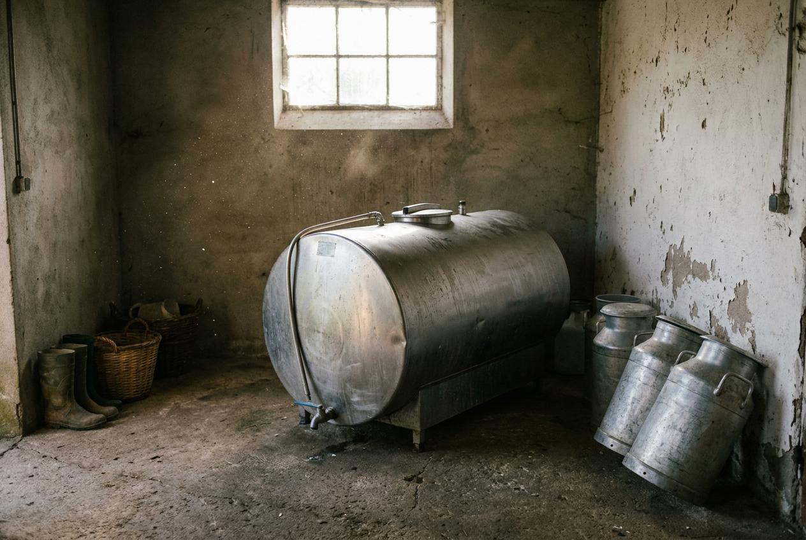

Our history
Ereteti Dairy Sacco began in 1998 when nine farmers joined together to collect and sell their milk. The first cooler was small, but it gave members a reliable place to deliver their milk.
Today, around eight hundred farmers deliver milk to our three routes. We continue to serve our members with dependable collection and monthly payment.


We started with nine farmers and one cooler. The ledger was a school exercise book.
Chairperson, Ereteti Dairy Sacco
Working together keeps our members' milk moving.